Federating the Dragons: figures
CAA 2026 proceedings paper, 13 figures as used in the manuscript, each with its file name and caption.

img/fig-layers.pngThe federated Knowledge Graph ecosystem with its LOD layer, community layer (Wikibase instances and OpenStreetMap) and FDO layer.
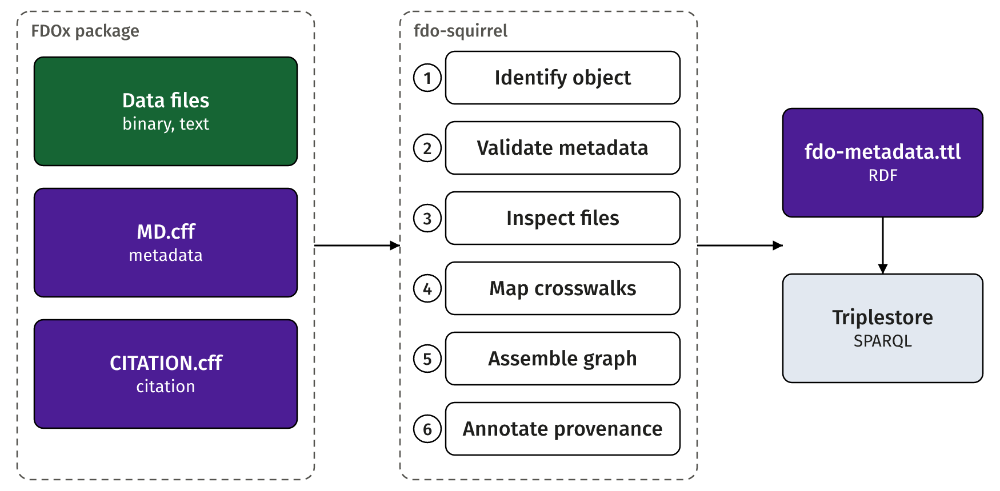
img/fig-fdox.pngFDOx package structure and conversion of a ZIP package into an RDF representation with fdo-squirrel.
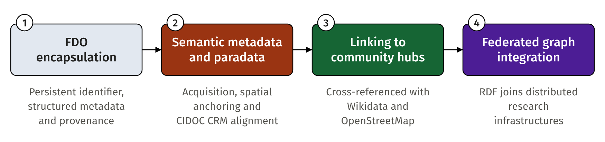
img/fig-fdoxsteps.pngThe four-step FDOx pattern: the package is encapsulated as an FDO, described with semantic metadata and paradata, linked to community hubs and integrated into the federated Knowledge Graph.
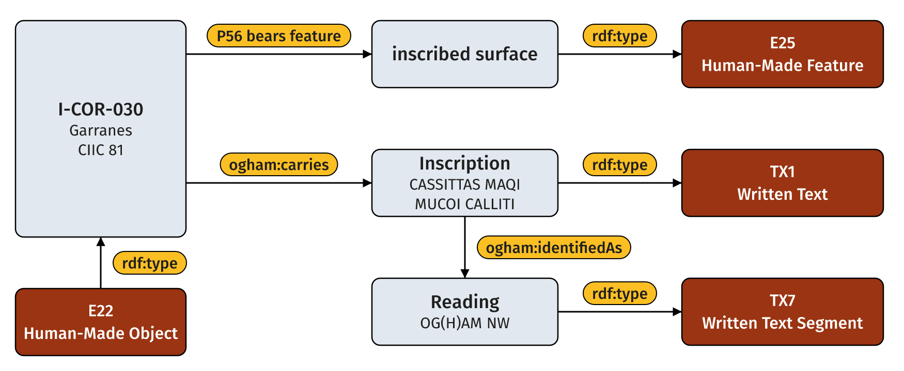
img/fig-ontology.pngExtract from the Linked Open Ogham ontology with the stone I-COR-030 (Garranes, CIIC 81) as E22 Human-Made Object, its inscribed surface (E25), the inscription (TX1 Written Text) and its reading (TX7 Written Text Segment), derived from the TEI/EpiDoc edition .
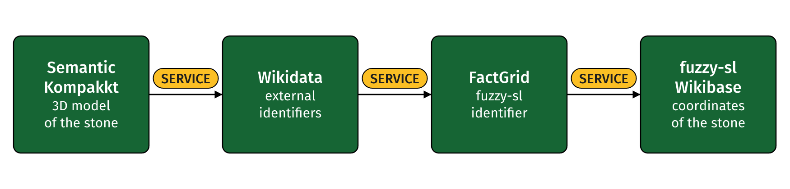
img/fig-query.pngFederated SPARQL query between Semantic Kompakkt, Wikidata, FactGrid and the fuzzy-sl Wikibase, linked by SERVICE clauses.
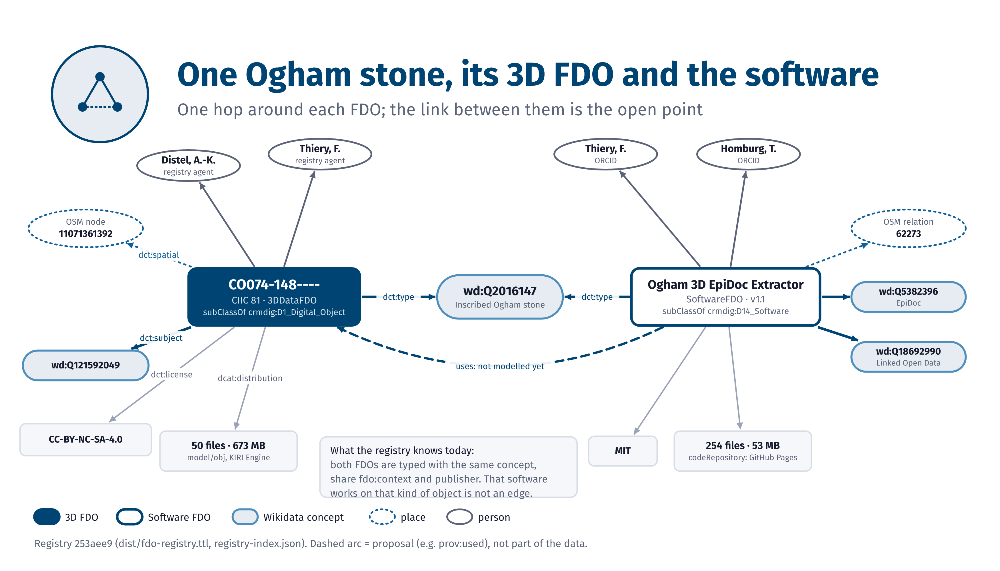
img/fig-ciic81-fdo.pngFDOx package of the 3D model of CIIC 81 and the software FDO o3d-epidoc-extractor in the registry of FDOx: persistent identifiers, files, licence and links to Wikidata and OpenStreetMap. The dashed arc is a proposal and not yet part of the data.
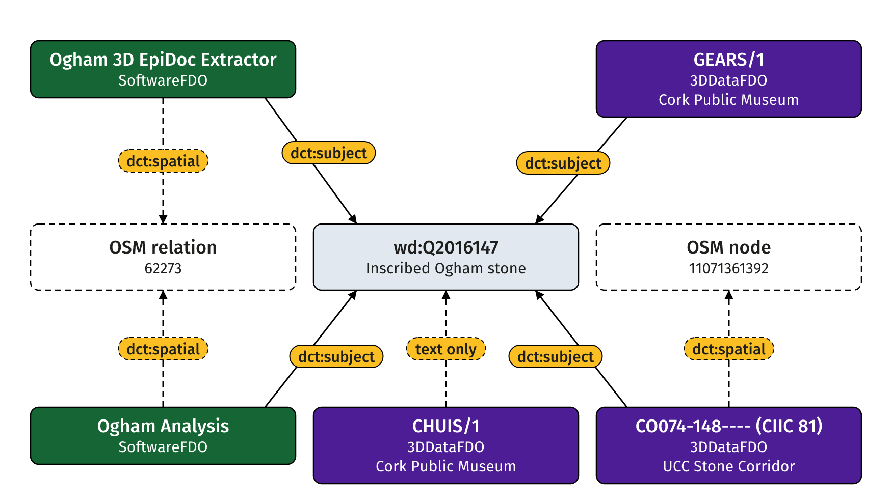
img/fig-oghamgraph.pngThe Ogham stone as a hub in the FDOx registry. The Wikidata item of the inscribed stone links two 3D data FDOs (green boxes: software FDOs; purple boxes: 3D data FDOs) and two software FDOs through dct:subject; dct:spatial points to OpenStreetMap relation and node. Dashed: the link is free text only or a second node for the same place.
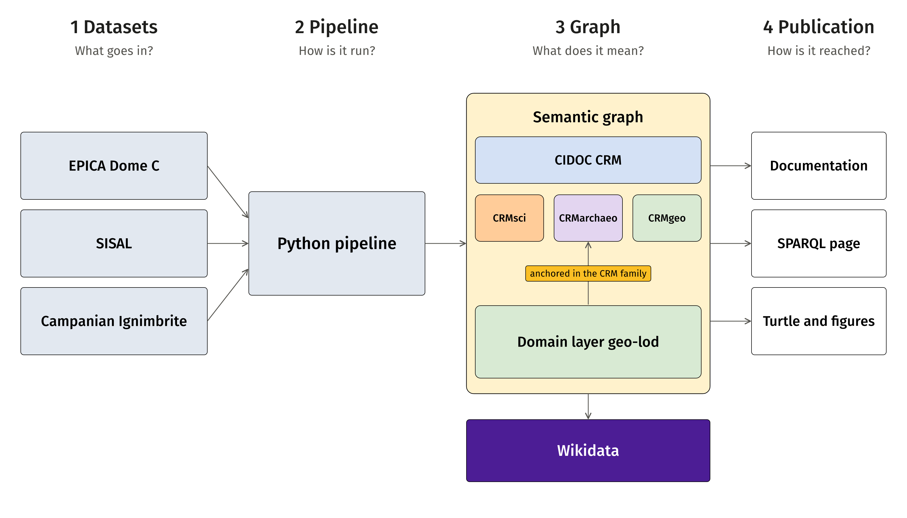
img/fig-geoworkflow.pngThe geo-lod demonstrator: three datasets (EPICA Dome C, SISAL, Campanian Ignimbrite findspots), one reproducible Python pipeline, a graph anchored in the CIDOC CRM family and its publication. Figure CC BY 4.0.
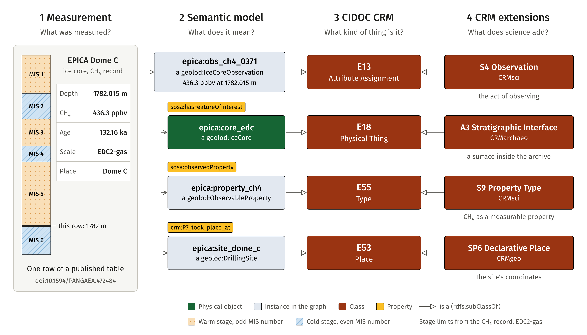
img/fig-geomeasure.pngFrom one table row of EPICA Dome C to the CIDOC CRM family and its extensions. Data: Spahni and Stocker (2006), doi:10.1594/PANGAEA.472484; figure CC BY 4.0.
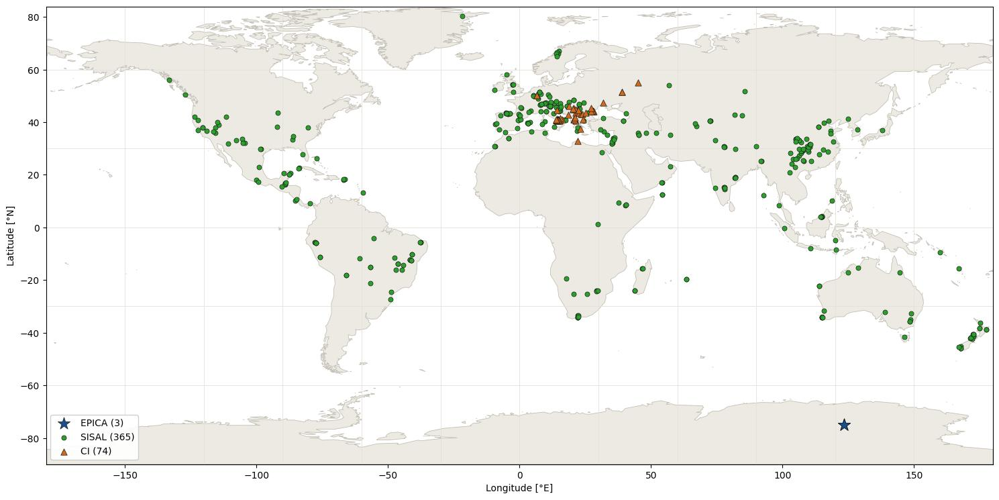
img/fig-geomap.jpgAll 442 sites that geo-lod publishes with a position (EPICA 3, SISAL 365, Campanian Ignimbrite 74), drawn from the RDF graph. Basemap: Natural Earth; figure CC BY 4.0.
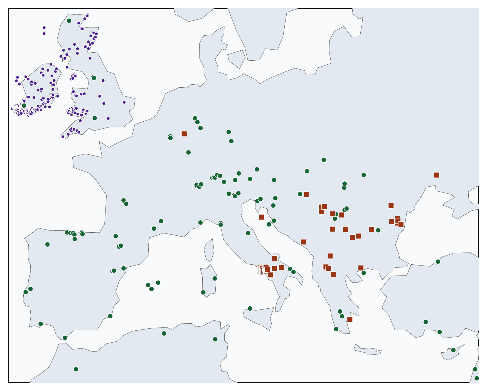
img/fig-map.pngOgham stones, SISAL caves and Campanian Ignimbrite findspots on one map of Europe and the Mediterranean. Purple circles: Ogham stones (363 distinct positions in the frame, from the TEI/EpiDoc crosswalk); green circles: SISAL caves (105); red squares: Campanian Ignimbrite findspots (69). Sites outside the frame are not drawn. Basemap: Natural Earth.
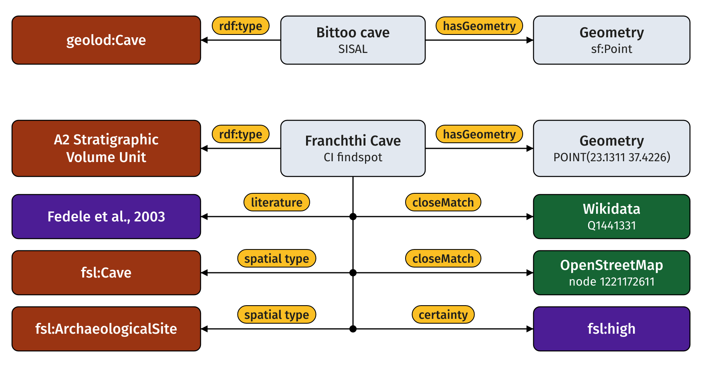
img/fig-geo.pngModelling principle for speleothem caves and Campanian Ignimbrite findspots as places, with Franchthi Cave modelled in the fuzzy-sl model. Data: geo-lod (SISAL, campanian-ignimbrite-geo).
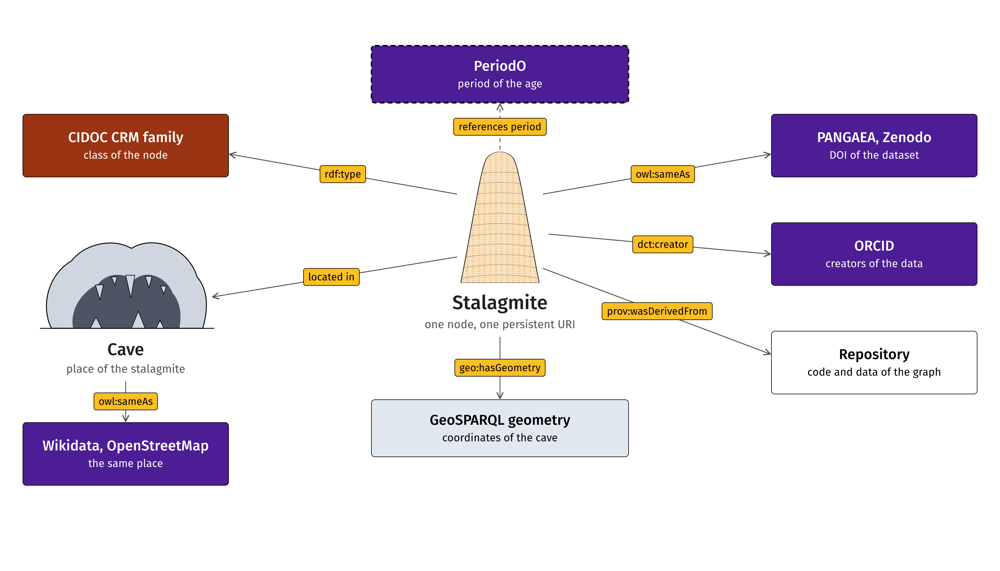
img/fig-geolinked.pngWhere the graph opens up: a stalagmite as a node, linked to the CIDOC CRM family, its cave, Wikidata, OpenStreetMap, DOIs, ORCID and its source repository. Figure CC BY 4.0.